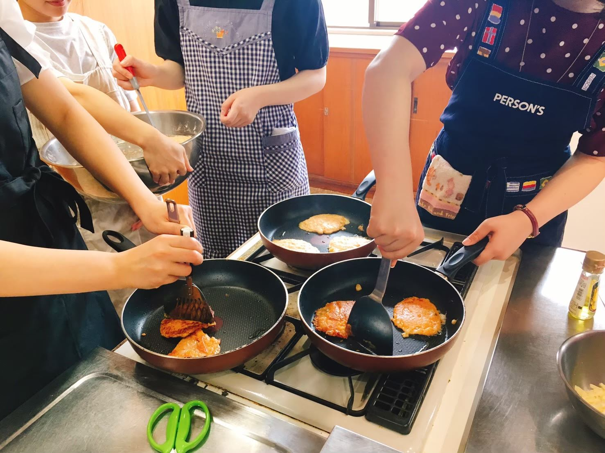
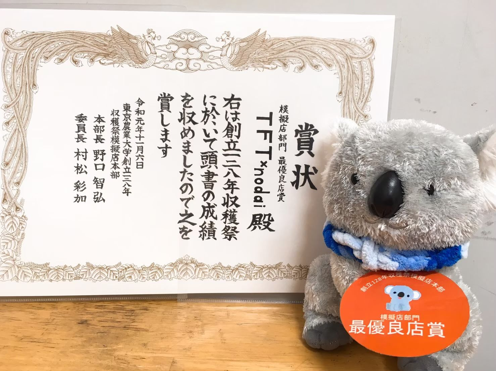

収穫祭
だいこんもちの販売が恒例です！毎年アイデアを出し合い、伝統を受け継ぎながらもその年の個性を出しています！当日は、お揃いのTFT×nodaiオリジナル赤パーカーを着てシフトに入ります！学祭を楽しめるだけでなく、開発途上国の子どもたちにも売り上げの一部を寄付しています。
試作会
販売するものを決めたら、実際にみんなで試作会をします！当日販売することを想像しながら試作をするのがとても楽しいです♪
看板づくり

事前にメンバーからデザインを募集し、夏休みに集まって作成します。わいわいしながら作業進行！自分が作成に携わった看板は当日どの模擬店よりも目立って見えます(笑)
最優良店賞受賞
創立128年収穫祭では、数ある模擬店のなかで最優良店賞を受賞しました！！TFT×nodaiへの愛が止まりませんね！！
BACK